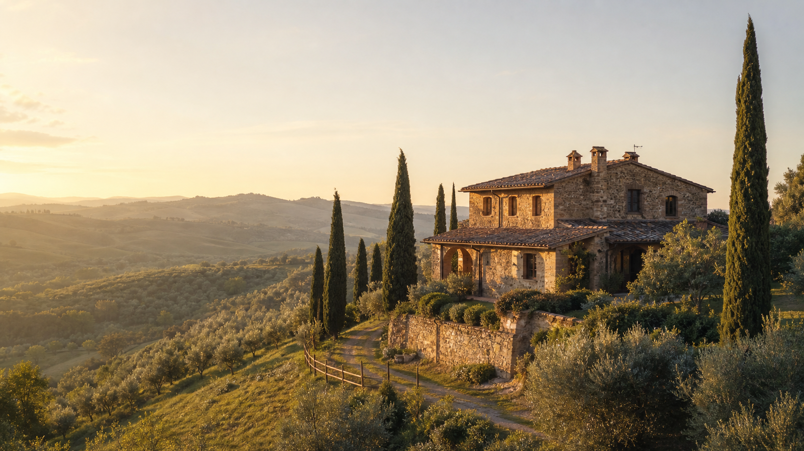
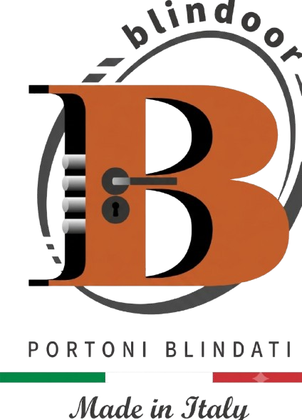
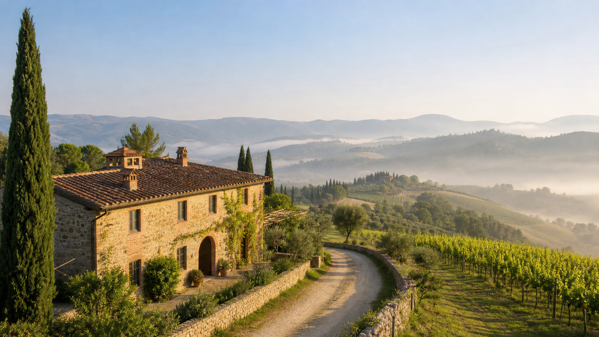
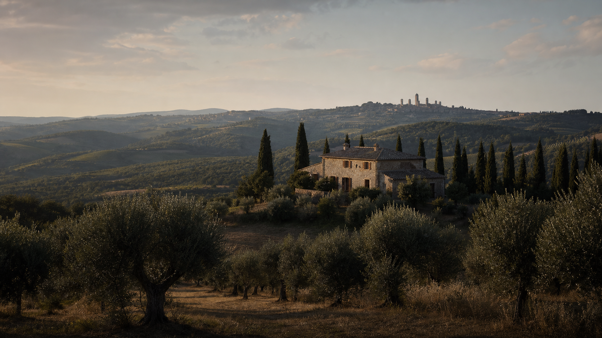
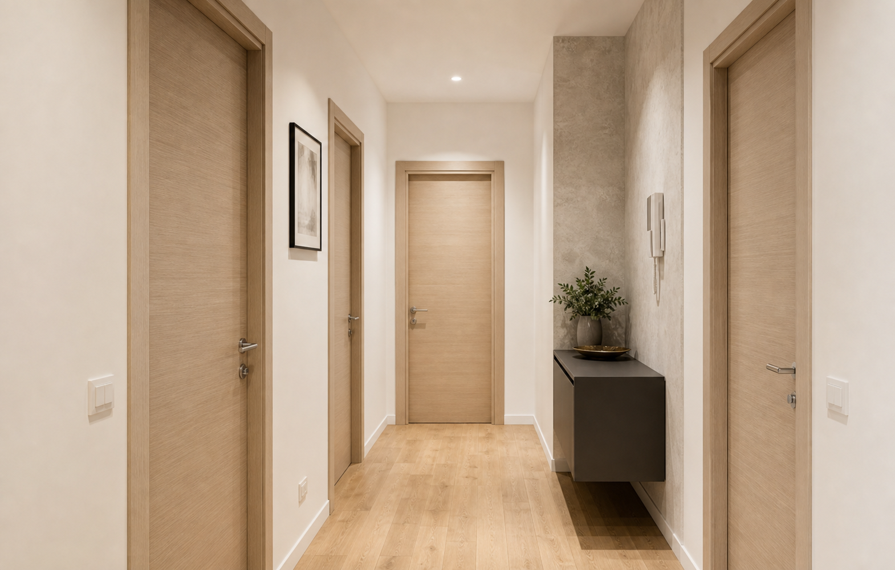
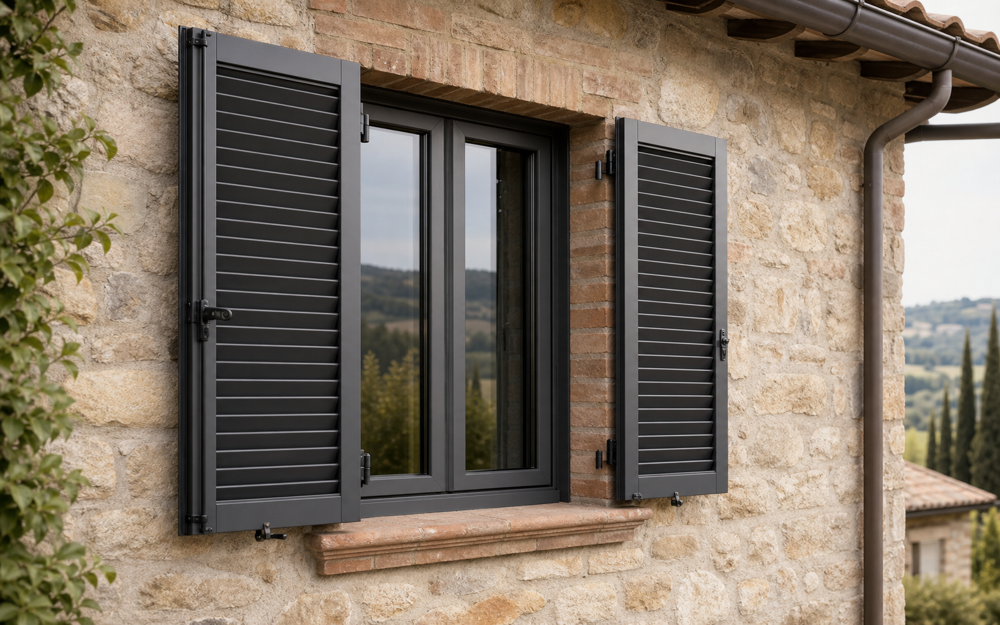
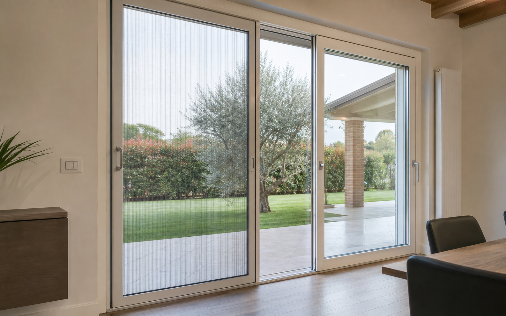

Porte blindate
Porte blindate Zanzariere
Zanzariere Persiane
Persiane Avvolgibili
Avvolgibili Inferriate
Inferriate
Certaldo
Infissi ad alto isolamento
Installazione ordinata, profili puliti e massima luminosità negli ambienti.






Realizzazioni
Installazione ordinata, profili puliti e massima luminosità negli ambienti.

Soluzione elegante con finiture coerenti e passaggi ben integrati nell'arredo.

Estetica tradizionale, protezione esterna e dettaglio tecnico su misura.

Passaggio leggero, rete discreta e utilizzo pratico per aperture quotidiane.